Anlage 3 Bezeichnung der Fahrzeuge
Rheinschiffahrtspolizeiverordnung
1. Allgemeines
1. Die nachstehenden Bilder dienen nur zur Erläuterung. Es ist stets vom Wortlaut der Verordnung auszugehen, der allein Geltung hat.
2. Schubverbände, deren Länge 110,00 m und deren Breite 12,00 m nicht überschreiten, gelten als einzeln fahrende Fahrzeuge von gleicher Länge.
3. Zeichenerklärung:
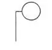 | 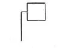 | 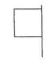 | |
Licht von allen Seiten sichtbar | Licht nur über einen beschränkten Horizontbogen sichtbar | Funkellicht | Flagge oder Tafel |
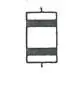 | 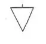 | 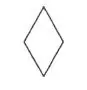 | |
Ball | Zylinder | Kegel | Doppelkegel |
Ein Licht, das dem Blick des Beschauers tatsächlich entzogen ist, ist mit einem Punkt in der Mitte versehen. Bilder mit schwarzem Hintergrund enthalten die Lichter bei Nacht.
Nachtbezeichnung | Bild | Tagbezeichnung |
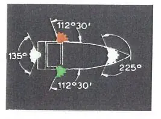 | 1 | |
§ 3.01 Begriffsbestimmungen und Anwendungen Nr. 1: Der Horizontbogen, über den das Topplicht, die Seitenlichter und das Hecklicht sichtbar sind | ||
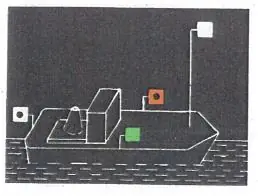 | 2 | |
§ 3.08 Einzeln fahrende Fahrzeuge mit Maschinenantrieb Nr. 1: Länge bis 110,00m | ||
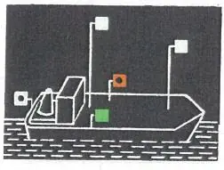 | 3 | |
§ 3.08 Einzeln fahrende Fahrzeuge mit Maschinenantrieb Nr. 2: Länge mehr als 110,00 m | ||
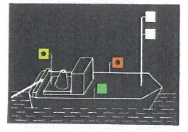 | 4 | 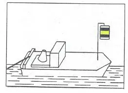 |
§ 3.09 Schleppverbände Nr. 1: Fahrzeug mit Maschinenantrieb, das allein an der Spitze des Verbandes fährt | ||
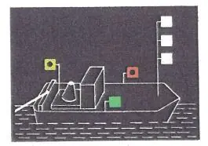 | 5 | 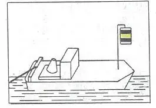 |
§ 3.09 Schleppverbände Nr. 2: Die Fahrzeuge mit Maschinenantrieb, die zu mehreren nebeneinander an der Spitze des Verbandes fahren | ||
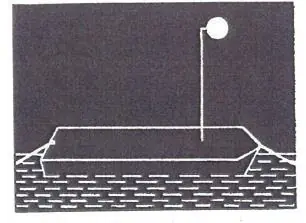 | 6 | 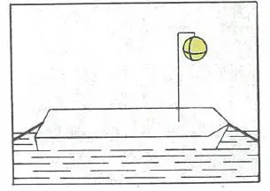 |
§ 3.09 Schleppen Nr. 3: Geschleppte Fahrzeuge | ||
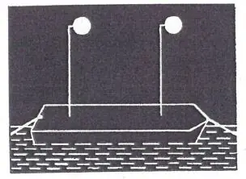 | 7 | 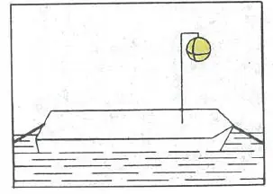 |
§ 3.09 Schleppen Nr. 3: Anhanglänge des Verbandes über 110,00 m | ||
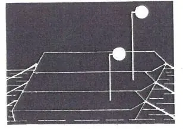 Geändertes Bild 8: Das Licht auf dem mittleren Anhang befindet sich auf dem äußeren Anhang | 8 | 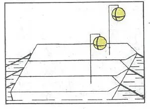 |
§ 3.09 Schleppen Nr. 3 Buchstabe b: Anhanglänge des Verbandes mit mehr als zwei längsseits verbundenen Fahrzeugen | ||
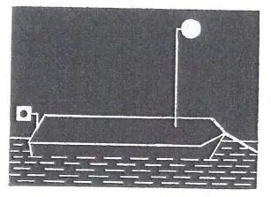 | 9 | 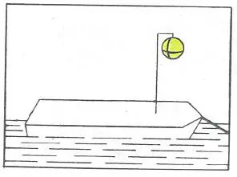 |
§ 3.09 Schleppen Nr. 4: Das Fahrzeug als letzte Anhanglänge des Schleppverbandes | ||
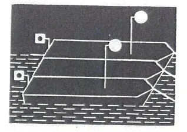 | 10 | 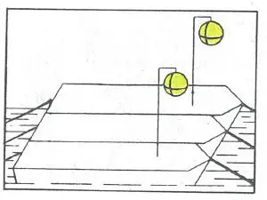 |
§ 3.09 Schleppen Nr. 4: Mehrere Fahrzeuge als letzte Anhanglänge des Schleppverbandes | ||
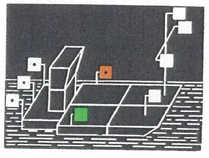 | 11 | |
§ 3.10 Schubverbände Nr. 1: Schubverband | ||
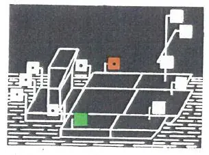 | 12 | |
§ 3.10 Schubverbände Nr. 1 Buchstabe c: Außer dem schiebenden Fahrzeug zwei oder mehr von hinten in ganzer Breite sichtbare Fahrzeuge | ||
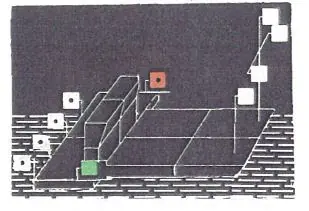 | 13 | |
§ 3.10 Schubverbände Nr. 2: Zwei schiebende Fahrzeuge | ||
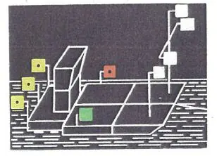 | 14 | 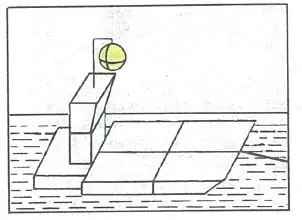 |
§ 3.10 Schubverbände Nr. 3 und 4: Geschleppte Schubverbände | ||
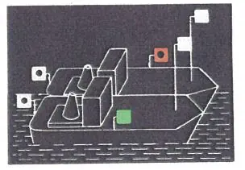 | 15 | |
§ 3.11 Gekuppelte Fahrzeuge Nr. 1: Zwei Fahrzeuge mit Maschinenantrieb | ||
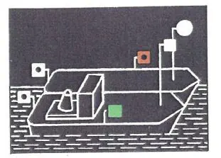 | 16 | |
§ 3.11 Gekuppelte Fahrzeuge Nr. 1: Ein Fahrzeug mit Maschinenantrieb und ein Fahrzeug ohne Maschinenantrieb | ||
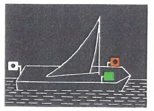 | 17 | |
§ 3.12 Fahrzeuge unter Segel | ||
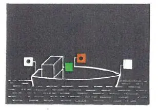 | 18 | |
§ 3.13 Kleinfahrzeuge Nr. 1 Buchstabe a, b und c: Kleinfahrzeuge mit Maschinenantrieb | ||
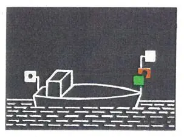 | 19 | |
§ 3.13 Kleinfahrzeuge Nr. 1 Buchstabe d, e und f: Kleinfahrzeug mit Maschinenantrieb mit Seitenlichtern unmittelbar nebeneinander oder in einer einzigen Laterne | ||
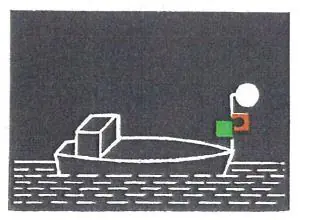 | 20 | |
§ 3.13 Kleinfahrzeuge Nr. 1 Buchstabe f: Kleinfahrzeug mit Maschinenantrieb mit einem von allen Seiten sichtbaren Licht | ||
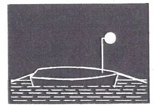 | 21 | |
§ 3.13 Kleinfahrzeuge Nr. 3: Geschleppt oder längsseits gekuppelt | ||
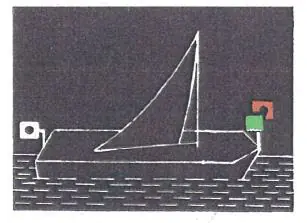 | 22 | |
§ 3.13 Kleinfahrzeuge Nr. 4: Unter Segel fahrend | ||
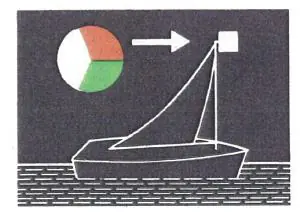 | 23 | |
§ 3.13 Kleinfahrzeuge Nr. 4: Unter Segel fahrend mit einer einzigen Laterne am Topp | ||
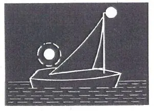 | 24 | |
§ 3.13 Kleinfahrzeuge Nr. 4: Unter Segel fahrend mit einem von allen Seiten sichtbaren Licht und bei Annäherung anderer Fahrzeuge ein zweites Licht zeigend | ||
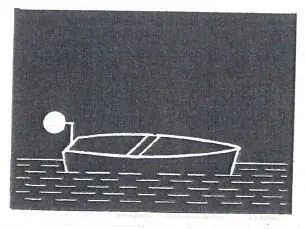 | 25 | |
§ 3.13 Kleinfahrzeuge Nr. 5: Einzeln weder mit Antriebsmaschine noch unter Segel fahrend | ||
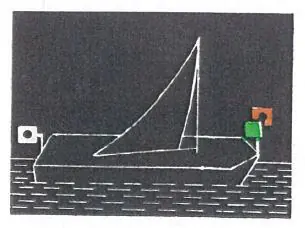 | 26 | 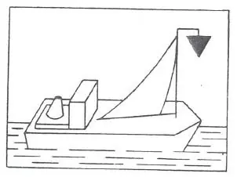 |
§ 3.13 Kleinfahrzeuge Nr. 1 und 6: Unter Segel und gleichzeitig mit einer Antriebsmaschine fahrend | ||
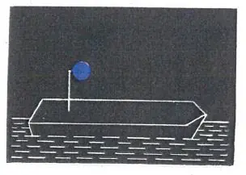 | 27a | 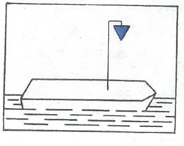 |
27b | 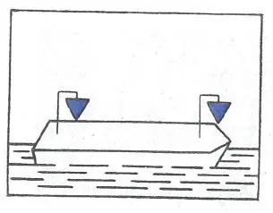 | |
§ 3.14 Fahrzeuge bei Beförderung bestimmter gefährlicher Güter Nr. 1: Bestimmte entzündbare Stoffe nach ADNR | ||
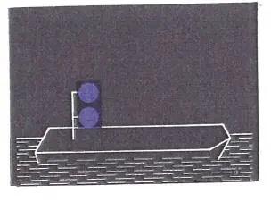 | 28a | 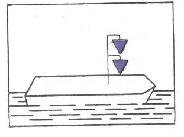 |
28b | 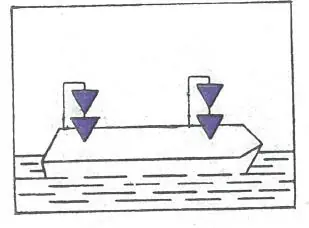 | |
§ 3.14 Fahrzeuge bei Beförderung bestimmter gefährlicher Güter Nr. 2: Bestimmte gesundheitsschädliche Stoffe nach ADNR | ||
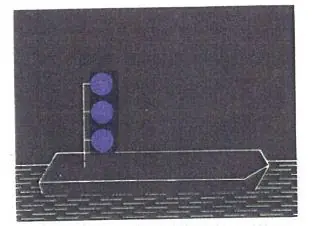 | 29 | 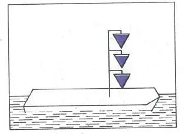 |
§ 3.14 Fahrzeuge bei Beförderung bestimmter gefährlicher Güter Nr. 3: Bestimmte explosive Stoffe nach ADNR | ||
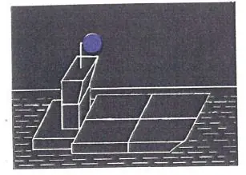 | 30 | |
§ 3.14 Fahrzeuge bei Beförderung bestimmter gefährlicher Güter Nr. 4: Schubverband | ||
31 | ||
§ 3.14 Fahrzeuge bei Beförderung bestimmter gefährlicher Güter Nr. 4: Gekuppelte Fahrzeuge | ||
32 | ||
§ 3.14 Fahrzeuge bei Beförderung bestimmter gefährlicher Güter Nr. 5: Schubverbände mit zwei schiebenden Fahrzeugen | ||
33 | ||
§ 3.15 Fahrzeuge, die zur Beförderung von mehr als 12 Fahrgästen zugelassen sind und deren Länge unter 20,00 m liegt | ||
34 | ||
§ 3.16 Fähren Nr. 1: Nicht frei fahrende Fähren | ||
35 | ||
§ 3.16 Fähren Nr. 2: Oberster Buchtnachen oder Döpper bei einer Gierfähre am Längsseil | ||
36 | ||
§ 3.16 Fähren Nr. 3: Frei fahrende Fähren | ||
37 | ||
§ 3.17 Fahrzeuge, die einen Vorrang besitzen | ||
38 | ||
§ 3.18 Manövrierunfähige Fahrzeuge | ||
39 | ||
§ 3.19 Schwimmkörper und schwimmende Anlagen | ||
40 | ||
§ 3.20 Fahrzeuge beim Stilliegen Nr. 1: Fahrzeuge mit Ausnahme der Kleinfahrzeuge, Fähren und schwimmenden Geräte bei der Arbeit | ||
41 | ||
§ 3.20 Fahrzeuge beim Stilliegen Nr. 2: Kleinfahrzeuge mit Ausnahme der Beiboote | ||
42 | ||
§ 3.21 Stilliegende Fahrzeuge bei Beförderung bestimmter gefährlicher Güter | ||
43 | ||
§ 3.21 Stilliegende Fahrzeuge bei Beförderung bestimmter gefährlicher Güter: Schubverbände | ||
44 | ||
§ 3.21 Stilliegende Fahrzeuge bei Beförderung bestimmter gefährlicher Güter: Gekuppelte Fahrzeuge | ||
45 | ||
§ 3.22 Fähren, die an ihrer Landestelle stilliegen Nr. 1: Nicht frei fahrende Fähren | ||
46 | ||
§ 3.22 Fähren, die an ihrer Landestelle stilliegen Nr. 2: Frei fahrende Fähren | ||
47 | ||
§ 3.23 Schwimmkörper und schwimmende Anlagen | ||
48 | ||
§ 3.24 Fischereifahrzeuge mit Netzen oder Auslegern | ||
49a | ||
49b | ||
§ 3.25 Schwimmende Geräte bei der Arbeit sowie festgefahrene oder gesunkene Fahrzeuge Nr. 1 Buchstabe a: Durchfahrt frei an beiden Seiten | ||
50a | ||
50b | ||
§ 3.25 Schwimmende Geräte bei der Arbeit sowie festgefahrene oder gesunkene Fahrzeuge Nr. 1 Buchstabe a und b: Durchfahrt frei an einer Seite | ||
51 | ||
§ 3.25 Schwimmende Geräte bei der Arbeit sowie festgefahrene oder gesunkene Fahrzeuge Nr. 1 Buchstabe c: Schutz gegen Wellenschlag; Durchfahrt frei an beiden Seiten | ||
52 | ||
§ 3.25 Schwimmende Geräte bei der Arbeit sowie festgefahrene oder gesunkene Fahrzeuge Nr. 2: Festgefahrene oder gesunkene Fahrzeuge; Durchfahrt frei an einer Seite | ||
53 | ||
§ 3.26 Fahrzeuge und Schwimmkörper, deren Anker die Schiffahrt gefährden können Nr. 1 und 3: Fahrzeuge und Anker | ||
54 | ||
§ 3.26 Fahrzeuge, Schwimmkörper und schwimmende Anlagen, deren Anker die Schiffahrt gefährden können Nr. 2 und 3: Schwimmkörper, schwimmende Anlagen und deren Anker | ||
55 | ||
§ 3.26 Fahrzeuge, Schwimmkörper und schwimmende Anlagen, deren Anker die Schiffahrt gefährden können Nr. 4: Anker schwimmender Geräte | ||
56 | ||
§ 3.27 Fahrzeuge der Überwachungsbehörde | ||
57 | ||
§ 3.28 Fahrzeuge, die Arbeiten in der Wasserstraße ausführen | ||
58 | ||
§ 3.29 Schutz gegen Wellenschlag | ||
59 | ||
§ 3.30 Notzeichen | ||
60 | ||
§ 3.31 Verbot, das Fahrzeug zu betreten | ||
61 | ||
§ 3.32 Verbot zu rauchen, ungeschütztes Licht oder Feuer zu verwenden | ||
62 | ||
§ 3.33 Verbot des Stillliegens nebeneinander; § 15.07 Nummer 8 Buchstabe a Sorgfaltspflicht beim Bunkern von Flüssigerdgas (LNG) | ||
63 | ||
§ 6.04 Begegnen Nr. 3: Begegnen an der Steuerbordseite | ||
64 | ||
§ 3.08 Einzeln fahrende Fahrzeuge mit Maschinenantrieb Nr. 3: Schnelles Schiff | ||
65 | ||
§ 3.34 Zusätzliche Bezeichnung der Fahrzeuge beim Einsatz von Tauchern | ||
66 |  | |
§ 2.06 Kennzeichnung der Fahrzeuge, die Flüssigerdgas (LNG) als Brennstoff nutzen |